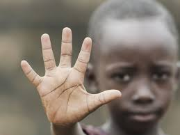
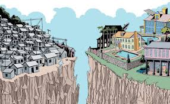
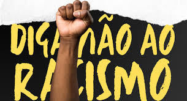

O que é Racismo?

Racismo é a discriminação e preconceito contra indivíduos com base na cor da pele ou características físicas, sob a falsa ideia de que a humanidade é dividida em raças distintas, com algumas sendo superiores a outras. Essa crença não tem fundamento científico, pois do ponto de vista biológico, não existem raças humanas distintas.
O racismo pode se manifestar de várias formas, incluindo atitudes individuais, políticas institucionais e práticas sociais que marginalizam e prejudicam grupos específicos. No Brasil, o racismo é considerado crime, conforme a Lei n. 7.716/1989.
Tipos de Racismo
- Racismo Estrutural: Refere-se às práticas e políticas institucionais que perpetuam a desigualdade racial.
- Racismo Cultural: Envolve a desvalorização de culturas e tradições de grupos raciais específicos.
- Racismo Individual: Manifesta-se através de atitudes e comportamentos preconceituosos de indivíduos.
Consequências do Racismo
O racismo pode levar à marginalização e exclusão social de grupos específicos, afetando suas oportunidades de educação, emprego e acesso a serviços básicos. Além disso, pode causar danos psicológicos e físicos às vítimas.
Legislação no Brasil
No Brasil, o racismo é considerado crime, conforme a Lei n. 7.716/1989, que prevê penas para práticas discriminatórias e preconceituosas.